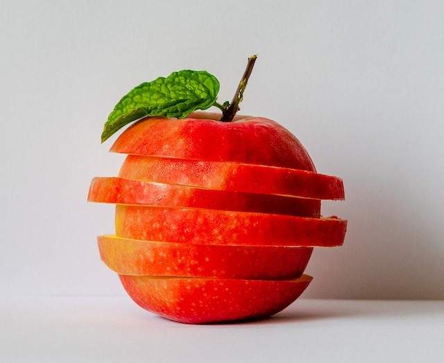

1 cup vanilla yogurt
2 tbsp peanut butter
1 tsp vanilla
1- 2 apples
In a bowl, mix yogurt, peanut butter, and vanilla. Slice the apple. Enjoy.
Apple dip: Time- 5 minutes, Materials- small bowl
6 Roma tomatoes
¼ onion
1 can of black beans
1 bag frozen sweet white corn
1 bunch of cilantro
Salt and pepper
2 tbsp Lime juice
Avocado (optional)
In colander, add can of black beans and bag of corn. Rinse black beans and corn under warm water until corn is thaw. Set aside to drain. Dice tomatoes, onion, cilantro, and avacado (optional). Add to bowl. Add corn and beans to bowl. Sprinkle salt and pepper. Add 2 tbs of lime juice. This creates a large bowl, it can be saved for leftovers or served to a group.